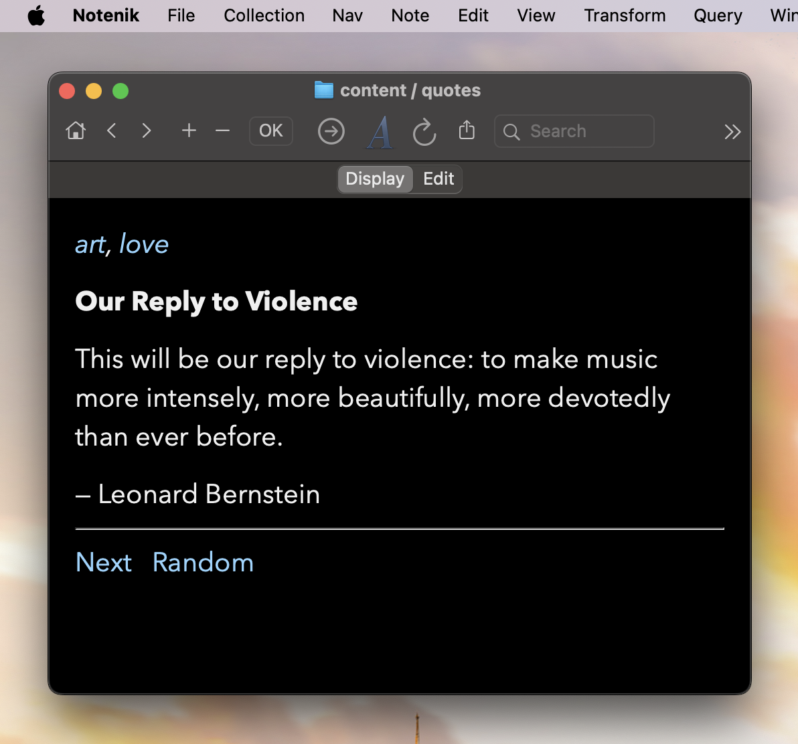

One of the things I use Notenik for is to maintain a list of my favorite quotations. I’ve compiled quite a few, and they are all meaningful to me, in addition to being reasonably concise.
Sometime ago I made some changes to Notenik so that I could easily see a random selection from this collection each morning: my quote of the day, so to speak. And I was frankly surprised at how much I enjoyed it.
So then I wondered if it might be worth sharing these with others. My first thought was to create an RSS feed containing each day’s quote. But then I ran into a problem: how could Notenik keep track of these random selections?
After some cogitating on the problem, I came up with the idea of adding a new field type to Notenik, to be called Date Picked. This way, as each random selection is made, Notenik would have a place to store a timestamp recording the date and time of each selection. And then, of course, a script file could filter and sort using this field, so that the selections could be presented in reverse chronological order (latest first), as is standard for feeds of all kinds.
I then added a new variation on the Notenik Custom URL Scheme so that I could perform a randompick operation — meaning select a note at random from the specified collection, then set the date picked to the current date and time. This way I could easily perform this operation by launching a link within Notenik, or through any other utility (such as Keyboard Maestro) capable of opening a URL.
(Somewhere along the way I decided to dub this whole thing the Portable Wisdom project, partly because I own the portablewisdom.com domain name, but mostly just because this phrase has resonated with me for a long time.)
Next I created a new Notenik template or two to generate an Atom feed and a corresponding web page so that I could share the most recent twenty of these selections.
And then, of course, a script file to sort the quotes and generate the output via the templates.
And then I created another variation on the Custom URL Scheme so that a URL could be used to run a Notenik script file. Again, this could be invoked from within Notenik or by any other handy utility.
So now each morning, just through a few quick actions, I can see my Portable Wisdom quote for the day, and also share it with others.
And although picking a quote at random each day might seem — well, sort of random — I’ve found that it’s this very randomness that I’m enjoying — as opposed to the usual relentless need to read and say something pointed and relevant about the latest bit of news that’s happened. Hopefully each of these quotes carries some bit of timeless wisdom, and it’s nice to reflect on that for a minute, before being swept up in the never-ending tide of the other stuff.
So feel free to subscribe to this Portable Wisdom feed if you’re into RSS. I’ll also be posting these from time to time to my Mastodon account, if you’d like to follow along there.
tags: feed